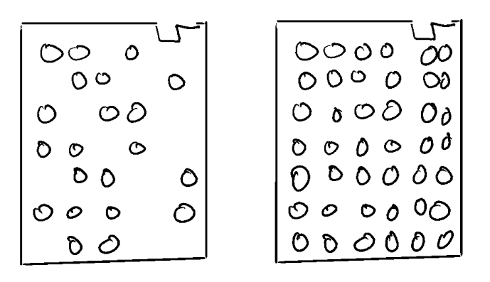
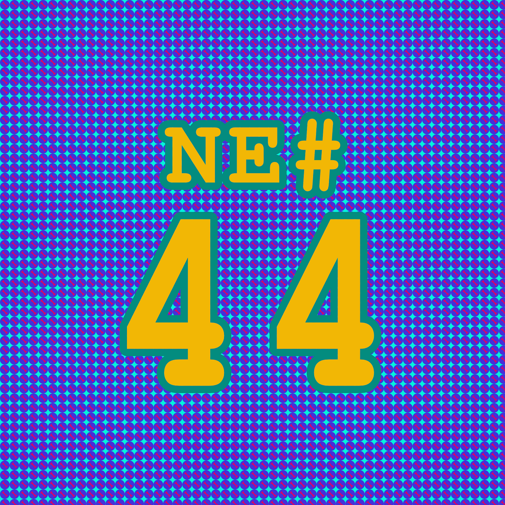

Die Nerd Enzyklopädie 44 - Von Fliegenklatschen und Häkeldeckchen
Auch damals, als Informationen noch auf Lochkarten gespeichert wurden, ließ man es sich nicht nehmen, den Kolleg:innen kleine Streiche zu spielen. Wie z.B. alle verfügbaren Löcher einer Lochkarte ausstanzen! Die Folge: Aufgrund der vielen Löcher war das Papier nicht mehr stabil genug. Die Karte konnte leichter verbiegen und so den Mechanismus im Kartenleser blockieren.

Und diese Art von manipulierten Lochkarten bekamen entsprechende Namen: **whoppee card (**Spaßkarte), lace card (Spitzenkarte, in Anlehnung an die kunstvoll ausgestanzten Grußkarten), flyswatter (Fiegenklatsche), IBM doily (Häkeldeckchen) oder ventilator card (Beatmungskarte) [CATB3, WIKI19].
